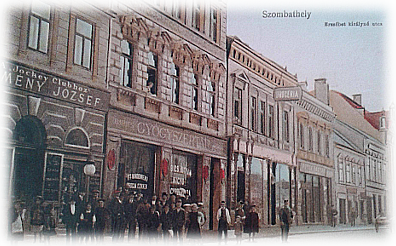

Németh Sándor visszaemlékezései
1. Család
Németh Sándor
Édesapám, apukám 1912.június 16-án született Körmenden, Németh Sándor és Kováts Mária ötödik gyermekeként. Apu is, ahogyan a többi testvére is még idős korukban is "kedvesapám, kedvesanyám"-ként emlegette szüleit, mindig tisztelettel és szeretettel. Egyedül a legidősebb testvér, Laci bácsi Brazíliából küldött levelében olvastam arról, hogy bizony "kedvesapja" néhányszor jól elnáspángolta.
A család nem valami jó körülmények között élt. A családfenntartó apa munkásként dolgozott a körmendi Frim Fűrészüzemben, végül asztalosként saját műhelyében. A körmendi Frim család leghíresebb sarja, Frim Jakab volt az, aki az "Első Magyar Hülyenevelő- és Óvóintézetet" alapította Budapesten. Apu mesélte, hogy bizony az egy évvel fiatalabb Józsi testvérével egy ágyban aludtak "lábtól-fejtől", és volt amikor nem volt téli cipőjük, csak egy pár: egyik napon egyikük, másnap a másikuk ment az iskolába; jobb volt amikor délelőtt-délután volt a váltás. A katolikus templom mellett, a még ma (2019) is ott álló épületben volt az iskola.
Borzasztó még elképzelni is, amit szintén apu mesélt, hogy amikor édesapját elvitték katonának 1914-ben, édesanyja ott maradt Miklós fiával a hasában, a 2-3 éves Sanyival és Józsival, a 4-5 éves Máriával, a 7-8 éves Annussal és Pistával és a 9-10 éves Lacival. És amikor bementek a városi elöljáróságra, hogy valamilyen támogatást kapjanak, azt a választ az egyik tisztségviselő, apu név szerint említette, hogy "Hamarosan tavaszodik, Némethné asszonyság, lehet a réten sóskát szedni!".
A család helyzete az önálló asztalossággal javulhatott, a fiúk ipart tanultak, sőt polgári iskolát (Pista), és tanítóképzőt/művészképzőt (Laci) végezhettek.
Apu ipariskolában "rőfös" kereskedősegédként végzett, ma méteráru eladónak mondanánk, és egy zsidó származású kereskedőnél szerezte a szakmai gyakorlatot.
Soha nem mondott semmi rosszat róluk, egy csomó zsidó származású ismerőse, sőt barátja volt, akikre még én is emlékszem:
Apai ágon nagyapám, Németh Sándor 1881. augusztus 29-én Molna-Szecsődön született Németh József földműves és Szabó Julianna htb.(háztarásbeli) gyermekeként, akik a
Nagyapám az asztalos szakmát tanulta ki és végül asztalos mester lett. A herceg úrnak is dolgozott, a körmendi ipartestület elöljáróságába is bekerült.
Nagyapa végigharcolta az I. Világháborút, élete végéig királypárti maradt.
1936-ban, 55 éves korában hunyt el. Tizenhat unokája közül csak egynek örülhetett, az akkor 1 éves Garger Katikának.
Inas korából mesélt apu egy történetet. Az tulajdonos, izraelita vallású főnöke megbízta, hogy vigye el a libát a
Körmenden komoly számú zsidóság élt. Közrejátszott ebben a is, hogy a Batthyány család birtokain engedélyezte a zsidóság letelepedését. Rohoncon is, ami szintén Batthyány tulajdon volt, igen nagy számú zsidóság élt. Amikor már át lehetett menni Ausztiába, szomorú volt látni a rohonci temetőjüket, amely nagy része üres volt, mert a Holokauszt súlyosan érintette ezeket a városokat is.  Rohoncon 1945-ben munkaszolgálatos zsidóket végeztek ki és temettek el sokáig (2018) ismeretlen helyen a környéken, tömegsírokban, miközben a Batthyány feleség a nácikkal mulatott. A szombathelyi zsidóság kialakulásában is nagy szerepük volt a Batthyányaknak, a város mai Thököly utcájától délre, a zsinagóga környéki birtokukon engedték a zsidó kereskedők és iparosok letelepedését. A város ehhez csak úgy járult hozzá, hogy az üzletek nem nyílhattak közvetlenül az utcára.
Apu, ahogyan az egész család vallásos volt. Nem véletlen, hogy tizenéves évei elején elhatározta, hogy misszionárius lesz. Természetesen mint dolgozó testvér kezdte a missziós életét az Isten Ige Társasága Verbita Rend kőszegi akkoriban (1929) épített missziós szemináriumában. Az anyarendház, Szt.Gabriel missziósház Mödlingenben, egy Bécs melletti városkában volt. Ottani emlékei közül mesélte, hogy Dolfuss osztrák kancellár, akit később a nácik meggyilkoltak, 1934-ben náluk volt lelkigyakorlaton. Csirke volt ebédre vagy vacsorára és a kancellár egyszer csak megszólalt: félre a villával meg a késsel, fogjuk meg kézzel, ahogyan a magyarok eszik a csirkecombot. Apu ezt többször emlegette, amikor csirke volt nálunk ebédre.
A másik amit elmesélt a kezdő missziós életéből, hogy Mödlingből a szerzetesi köpeny (malaclopó) alatt többször hoztak, csempésztek imakönyveket, rózsafüzéreket, feszületeket, mert Ausztriában olcsóbb volt.
Három képeslap maradt fenn, na meg a fekete
Apai nagyanyám, Kováts Mária, vagy ahogyan ő magát hívta Mariska, 1884 december 7-én Csákány (Nagycsákány) nevű faluban, azóta Rábadoroszlóval összevonták és ma Csákánydoroszló a neve. Édesapja, Kováts József Horvát-Nádalján született 1837. január 30-án, apja Kováts Ignác. Édesanyja, Spaits Katalin szintén Horvát-Nádalján született 1841. május 26-án Spaits István és Korbátsits Katalin gyermekeként. Spait Katalin, dédi, 1932-ig együtt élt Mariska lányával Körmenden. A dédszülők Csákányban lakhattak, hiszen Kováts József vasúti őrként dolgozott a csákányi állomáson, attól Szentgotthárd felé 100 méterre lévő bakterházban. Ma már nincsen meg, de apuék még a 60-as években mutatták, hogy ott született a nagyanyám.
A csákányi rokonságból a "3 nővérre" emlékszem, akik a doroszlói részen laktak. Igen családszeretőek voltak, Ivánc felé menet mindig bementünk hozzájuk, apu unokatestvérei voltak. Ketten nem mentek férjhez, a harmadik nővér férje egy Szakasits nevű férfi volt, akiről azt beszélték, hogy rokona Szakasits Árpádnak, aki köztársasági elnök is volt, de Rákosiék félreállították. 2010-es évek elején, dr. Schiffer András, korábbi LMP társelnök egy szombathelyi ismerős párttársával elment Csákányba felkeresni nagyapja, Szakasits Árpád rokonságát. A harmadik nővérnek egy fia volt, mozdonyvezető lett és úgy tudom Kőszegre költözött.
Nagyanyámról nem sokat tudok. Nevelte gyermekeit, ellátta a családot. Imakönyvébe írt gyermekei születési ideje mindenesetre szép és helyes írás. Okos és szép asszony lehetett. Mindenesetre olvashatóbb írása volt mint nekem.
Korán, 48 évesen ragadta el a halál. Nehéz, rövid életét 16 unoka köszöni. Lehet, hogy esküvői tanuja a bátyja, az akkor 28 éves Kováts Antal orbánfalui lakos
1933. január 15-én halt meg apu édesanyja, Szombathelyen feltehetően a kórházban. 48. évét 1932. december 7-én töltötte be, gyermekei közül Feri 11, Tercsi 13, Miklós 17 éves volt. Ez a tragédia biztosan közrejátszott abban, hogy apu nem folytatta missziós életét. Egyszer azt mondta, ha marad, lehet, hogy Kínába küldték volna téríteni. A körmendi kórházba került mint műtőssegéd, de nem bírta a vért, de még inkább a már régebben a műtőben dolgozó Somogyi János vele kapcsolatos viselkedését. Ez a tartózkodás évtizedekig fennállt, még én is érzékeltem gyermekként. Az maradt meg a műtős időkből, amikor halottat kellett kivinni a kórteremből a hullaházba, és nem volt más segítség; valamint néha, ha megkérték a hozzátartozók a halott felöltöztetése. Ezt megint nem jó szemmel nézték a Somogyik, mert közben az ifj. Somogyi János is műtős lett.
A katonaságot apu bokasüllyedés, azaz lúdtalp miatt megúszta. Sajnos a leszármazottak közül ezt többen örökölték, ahogyan a szemtengely-ferdülést és a rövidlátást is. Bár aput Batthany-Strattmann László, a boldoggá avatott szemorvos herceg, Körmenden megoperálta, élete végéig szemüveget kellett hordania. Ő is egyike volt a sok ezer szegénynek, akiket ingye műtött a szent ember.
A műtősséget feladta a kórház portási állásért, a döntésben a fentieken kívül közrejátszott az, hogy az álláshoz a portafülkéből nyíló szolgálati lakás járt (egy szoba, konyha és spájz), igaz, hogy ezért éjjel-nappal egész évben szolgálatban kellett lenni. Még én is emlékszem arra, hogy amikor szabdságra ment, akkor jött helyette Pap Gyuri bácsi, aki a
Apai nagyszüleim, Németh Sándor és Kováts Mária 1904. szeptember 12-én kötöttek házasságot Körmenden. Tíz gyermekük született 16 év alatt, mind Körmenden.
László
Úgy tudom, hogy tanítóképzőt végzett, van egy "Németh László
Laci bácsi élénk levelezést folytatott gimis-képzős (tanárképző) koromban. Büszke volt rám, hogy én is tanító leszek. Ő több ezer tanulót oktatott a sao paulói magyar iskolában.
Elismert ember volt, több tanítványa sikeres pályát futott be. Mikor egyedül maradt, többen hívták magukhoz.
Halála után Feri bácsi és Tomi Svájcból kimentek Brazíliába, azt mondták nekik, hogy az utóbbi években eléggé leépült. Feri bácsiék néhány személyes emléket hoztak magukkal.
Festményeiből pár darabot sikerült megmentenem, miután Éva,
Nekem, ha igaz, személyen köszönnivalóm is van Laci bácsinak: kisgyerek koromban ő küldött penicilin injekciót, amikor súlyos tüdőgyulladást kaptam.
Szép hangvételű, stílusos leveleiből néhányat megőriztem, na meg a sok-sok küldött brazil bélyegből.
Az 1960-as évek elején változott a helyzet, akkor lépett be Újvári Lajos bácsi a portára, azóta 24 óráztak apuval (unokaöccse, Újvári Laci gimnáziumi osztálytársa lett,
Apu természetesen a kórházban élte meg a front átvonulását. 1945 március végén az orosz-szovjet csapatok már a kórházban voltak, azok a beteg német katonák, akik ott maradtak egy napon mind meghaltak. Saját szememmel láttam a pavilon padlásán a kórház 45-ös évi betegnyilvántartásában. Apu mutatta meg a régi kórház bejárat kiskapujának vaskeretén a golyókat, amelyeket egy az emeletről tüzelő szovjet katona lőtt ki a kapuk kézti téglaoszlop mögé bújt németre, akit később sikerült eltalálni. Akkor még nem volt a port előtt előtető
Na de az én apukám, aki szerette, ha rend van, elkezdte összegyűjteni az udvaron eldobált német fegyvereket, a vállán néhány puskával, persze hogy az oroszok elkapták, szegény hiába mondta, hogy ő Németh Sándor, itt dolgozik a kórházban. Az oroszoknak ez olaj volt a tűzre: "Nemecki!!" üvöltötték és vitték hátra a pavilon falához, ahol már agyonlőttek egy jánosházi férfit. Ekkor látta meg Tárczi belgyógyász főorvos, akir tudott kicsit oroszul, apunak azt kiáltotta, hogy csinál úgy mint egy "durák", azaz bolond. Ezzel sikerült meggyőzni az oroszokat és apukám megmenekült.
No de volt még élesebb helyzet is! Már az oroszok bent voltak, a kórházat is használták. Apu persze a portán volt, fájt a foga és bekötötte az arcát egy színes sállal.